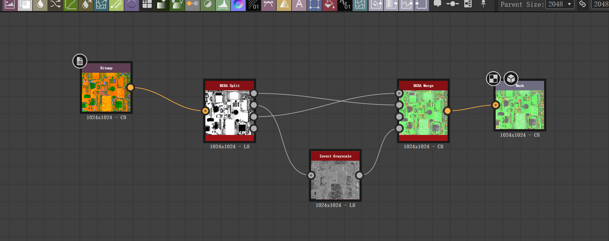
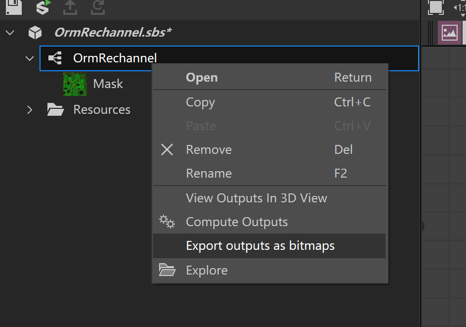

17.1 常用的贴图通道转换工具 Common Texture Channel Conversion Tools
使用 Substance 3D Designer 合并 ORM 通道 Merging ORM Channels with Substance 3D Designer
从 Adobe Substance 3D Designer 官方页面安装已授权的当前版本。旧文档中“替换 Substance Designer.exe”的做法来源不可信，已删除，请勿使用修改过的可执行文件。
Install a licensed current version from the official Adobe Substance 3D Designer page. The old documentation described replacing Substance Designer.exe; that came from an untrustworthy source and has been removed. Do not use a modified executable.
ORM 贴图的通道约定为：R = Ambient Occlusion、G = Roughness、B = Metallic。使用 RGBA Merge 节点，将三张灰度贴图分别连接到 R、G、B 输入，并将结果按线性颜色空间导出。
The channel convention for an ORM texture is R = Ambient Occlusion, G = Roughness, B = Metallic. Use the RGBA Merge node to connect the three grayscale textures to the R, G and B inputs respectively, then export the result in linear color space.
若要调整已有 ORM 贴图的通道，先用 RGBA Split 拆分，再通过 RGBA Merge 按上述顺序重新连接。以下截图仅作为节点连接方式参考。
To rearrange the channels of an existing ORM texture, split it with RGBA Split first, then reconnect the channels in the order above with RGBA Merge. The screenshots below are only a reference for how the nodes are connected.

